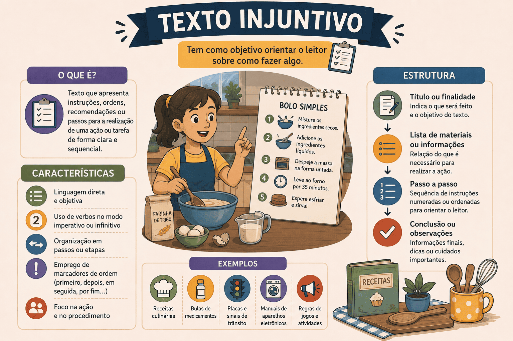

Texto Injuntivo: O que é, Características, Exemplos e Diferenças
Quantas vezes hoje você já seguiu uma instrução? Pode ter sido a leitura de uma receita de bolo, o manual para montar um móvel, a bula de um remédio ou até mesmo um aviso de "Pare" no trânsito. Todos esses são exemplos práticos da nossa convivência diária com o texto injuntivo.
O texto injuntivo (ou instrucional) é aquele que existe com a finalidade de orientar, ordenar, persuadir ou ensinar o leitor a realizar uma ação. É o gênero do "faça", "compre", "clique", "misture".
Nos exames como o ENEM e nos vestibulares, a tipologia injuntiva costuma aparecer nas questões de Linguagens atrelada a propagandas, manuais, campanhas comunitárias e ao estudo das funções da linguagem (especialmente a Função Apelativa).
Neste conteúdo, você aprenderá o que é o texto injuntivo, suas principais marcas linguísticas, a diferença sutil em relação ao texto prescritivo, e como as bancas costumam cobrar essa tipologia.

O que é o texto injuntivo?
O texto injuntivo (também chamado de texto instrucional) é a tipologia textual focada em indicar procedimentos, dar ordens, sugerir ações ou aconselhar o leitor. Seu objetivo principal não é apenas transmitir uma informação teórica, mas sim levar o receptor a executar uma tarefa passo a passo ou convencê-lo a adotar uma atitude.
Texto Injuntivo é aquele que instrui, orienta ou convence o interlocutor a realizar determinada ação, caracterizando-se fortemente pelo uso de verbos no modo imperativo e pela linguagem direta.
Quais são as principais características do texto injuntivo?
Por ser um texto voltado para a ação, a linguagem do texto injuntivo é inconfundível:
Marcas linguísticas e estruturais
- Verbos no Modo Imperativo: É a marca registrada. Usa-se o imperativo (afirmativo ou negativo) para dar comandos: "Beba água", "Não fume", "Compre já", "Misture os ingredientes".
- Verbos no Infinitivo ou Presente do Indicativo: Como variação do imperativo, é comum encontrar ordens no infinitivo ("Deixar a massa descansar por 10 minutos") ou no presente com sentido de ordem ("Você deve ler o manual").
- Interlocução Direta: O texto fala diretamente com o leitor (uso dos pronomes você, tu, seu).
- Objetividade e Sequenciação: As instruções são apresentadas de forma lógica e sequencial (passo 1, passo 2), muitas vezes utilizando listas, tópicos ou numeração.
- Função Apelativa (ou Conativa): É a função da linguagem que predomina nesses textos, cujo foco é influenciar o comportamento do receptor da mensagem.
Nem tudo que manda é injuntivo!
Um poema pode conter verbos no imperativo (ex: "Ama-me como se não houvesse amanhã"), mas o objetivo central dele é a emoção (função poética/emotiva), e não instruir. A tipologia injuntiva só se confirma quando a intenção principal do texto é realmente passar uma instrução prática, técnica ou persuasiva para a vida real.
Texto Injuntivo x Texto Prescritivo
Essa é uma "pegadinha" clássica em provas de gramática e tipologia. Embora ambos mandem o leitor fazer algo, o nível de obrigatoriedade muda.
Texto Injuntivo (Sugestão/Orientação)
Apresenta um tom de conselho, instrução livre ou persuasão. Você pode seguir ou não; não há punição legal se desobedecer.
Exemplos: Receita culinária, propaganda ("Compre nosso carro"), manual de montagem, livro de autoajuda.
Texto Prescritivo (Imposição/Regra)
Apresenta um tom de ordem inquestionável, norma ou lei. É coercitivo; se você desobedecer, sofrerá sanções ou consequências graves.
Exemplos: Leis (Constituição), edital de concurso, bula de remédio (modo de uso restrito), contrato de aluguel.
Exemplos de Gêneros Injuntivos no dia a dia
Para visualizar melhor, confira alguns exemplos práticos onde a tipologia injuntiva domina:
- Receitas Culinárias: "Bata as claras em neve, adicione o açúcar aos poucos e leve ao forno por 40 minutos."
- Manuais de Instrução: "Encaixe a peça A na engrenagem B. Aperte os parafusos laterais até o travamento."
- Textos Publicitários (Anúncios): "Aproveite nossa queima de estoque! Venha para a loja e garanta já o seu desconto."
- Campanhas Comunitárias/Saúde: "Evite água parada. Combata o mosquito da dengue."
- Dicas e Tutoriais (Blogs/Vídeos): "Clique no link da bio, inscreva-se no canal e ative as notificações."
Questão de aplicação
Questão: (ENEM / Adaptada) Analise o texto de uma campanha do Ministério da Saúde:
"Proteja-se e proteja quem você ama. Lave as mãos com frequência, use álcool em gel e evite aglomerações. Ao primeiro sinal de febre e dificuldade respiratória, procure imediatamente um posto de saúde. A prevenção está em suas mãos."
No fragmento lido, predomina a tipologia textual:
- Expositiva, pois informa cientificamente como ocorre a proliferação viral.
- Argumentativa, já que o autor constrói uma tese filosófica sobre a importância da vida.
- Narrativa, pois descreve as ações sucessivas do personagem em direção ao posto de saúde.
- Injuntiva, marcada pela presença de verbos no imperativo que orientam o leitor a adotar comportamentos preventivos.
- Descritiva, caracterizada pelo detalhamento minucioso dos sintomas da doença no paciente.
Resolução
A alternativa correta é a 4 — Injuntiva, marcada pela presença de verbos no imperativo...
O objetivo central da campanha não é apenas informar sobre a doença (exposição), mas convencer o leitor a AGIR. Isso fica claro pelo uso sequencial de verbos no modo imperativo ("Proteja-se", "Lave", "use", "evite", "procure"). Esse comando voltado à modificação de comportamento do interlocutor é a essência do texto injuntivo e da função apelativa da linguagem.
Resumo: Como identificar o Texto Injuntivo?
O texto injuntivo é a tipologia da ação, do aconselhamento e do comando.
- Objetivo Maior: Levar o interlocutor a executar uma tarefa, mudar um hábito ou seguir um roteiro (instruir).
- Principais marcas: Verbos no imperativo (faça) ou infinitivo com valor de ordem (fazer), orações curtas e ordenação lógica em passos.
- Função Predominante: Função Apelativa (ou conativa) da linguagem.
- Gêneros mais comuns: Receitas, propagandas, tutoriais, regras de jogos, manuais de montagem.
Continue estudando Produção Textual
- Texto Dissertativo-Argumentativo: estrutura, características, exemplos e como fazer
- Texto Informativo: O que é, Características, Estrutura e Exemplos
- Gêneros discursivos: conceito, tipos e exemplos
- Competências da Redação do ENEM: guia completo das 5 competências
- Produção Textual e Redação — página 1
- Produção Textual e Redação — página 2
Referências
MARCUSCHI, Luiz Antônio. Produção textual, análise de gêneros e compreensão. São Paulo: Parábola Editorial.
KOCH, Ingedore Villaça; ELIAS, Vanda Maria. Ler e Escrever: estratégias de produção textual. São Paulo: Contexto.
Explore Outros Conteúdos
Continue seus estudos acessando outras seções do site Mestre Kira: